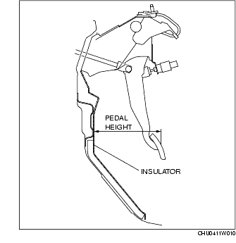
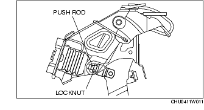
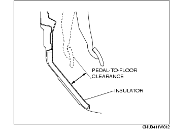

Workshop Manual ➭ BRAKES ➭ CONVENTIONAL BRAKE SYSTEM ➭ BRAKE PEDAL INSPECTION
BRAKE PEDAL INSPECTION
id041100801100
{: #wp1059776}
Brake Pedal Height Inspection
- Measure the distance from the center of the upper surface of the pedal pad to the insulator and verify that it is as specified.{: #wp1059786}

• If not within the specification, adjust the pedal height.
Brake pedal height (reference value)167 mm {6.57 in}
Brake Pedal Height Adjustment
Caution
• The brake switch may not operate normally after adjusting the pedal height. Whenever adjusting the pedal height, replace the brake switch with a new one. {: #wp1062306}• The interlock cable may not operate normally after adjusting the pedal height. Whenever adjusting the pedal height, refer to the interlock cable installation note. (See Interlock Cable Installation Note.)
- Loosen the locknut and turn the push rod to adjust the pedal height.{: #wp1059900}

- Tighten the locknut.
Tightening torque20.4-30.6 N·m {2.09-3.12 Kgf·m, 15.0-22.5 ft·lbf}
- After adjustment, inspect the pedal play.
Brake Pedal Play Inspection
-
Depress the pedal several times to release the vacuum in the power brake unit.
-
Gently depress the pedal by hand, and measure the pedal play.
• If not within the specification, inspect the wear of the clevis pin and replace it if there is any malfunction.
Brake pedal play2-5 mm {0.08-0.19 in}
*Note*{: #wp1060055}
• If there is no malfunction in the clevis pin, there is a possibility that the power brake unit has some malfunction. Verify that there are no malfunctions, and replace it if necessary.
Pedal-to-floor Clearance Inspection
-
Start the engine and depress the pedal with a pedal force of 147 N {15.0 Kgf, 33.0 lbf}.
-
Measure the distance between the pedal pad center and the insulator, and verify that it is as specified.{: #wp1060107}

• If the pedal-to-floor clearance is less than the specification, check for air in the brake system.
Brake pedal-to-floor clearance (Brake pedal when depressed at 147 N {15.0 Kgf, 33.0 lbf}106.9 mm {4.209 in} or more